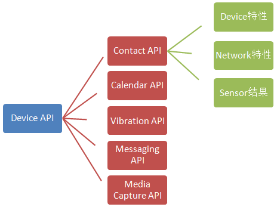
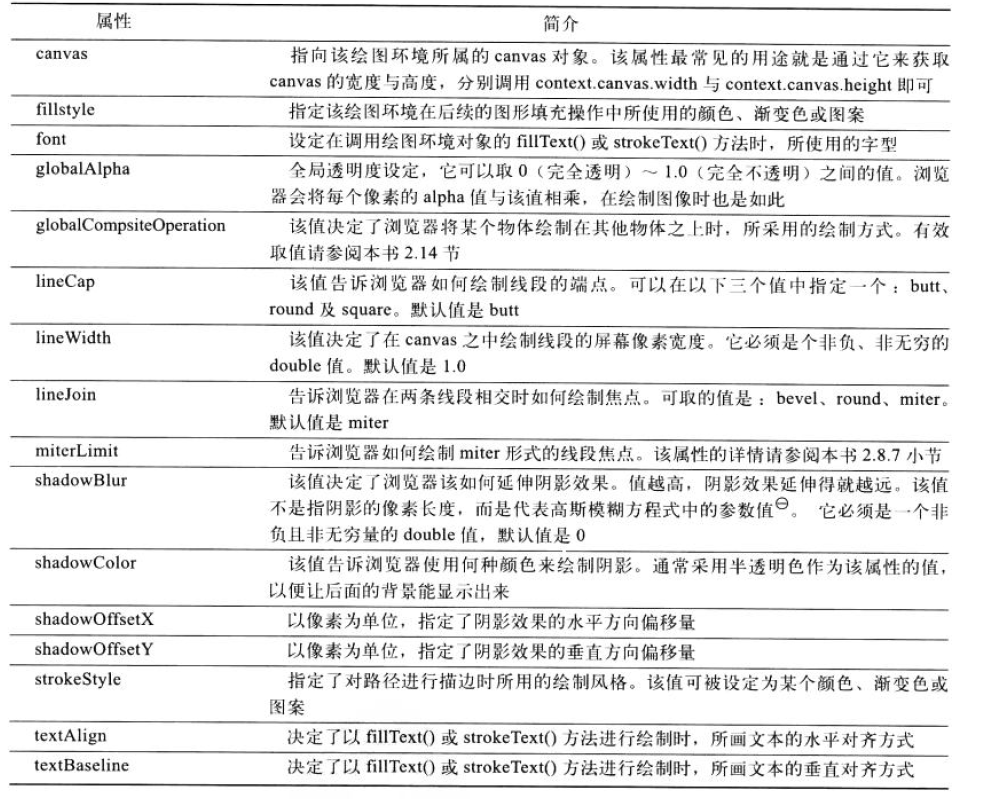
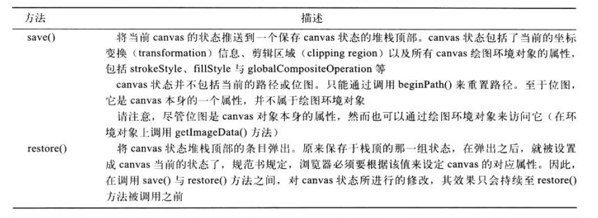
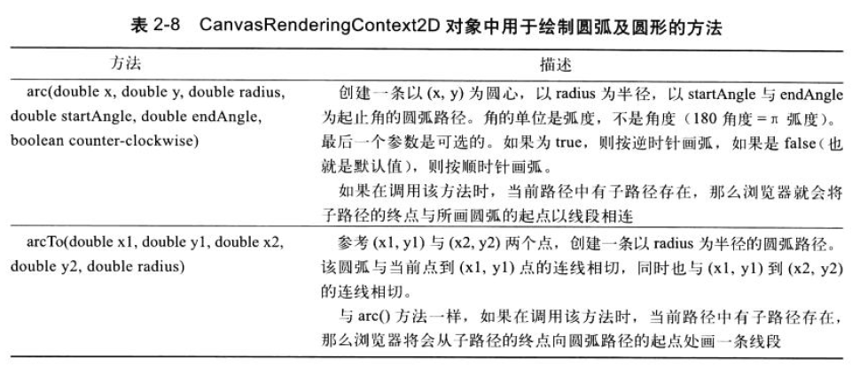
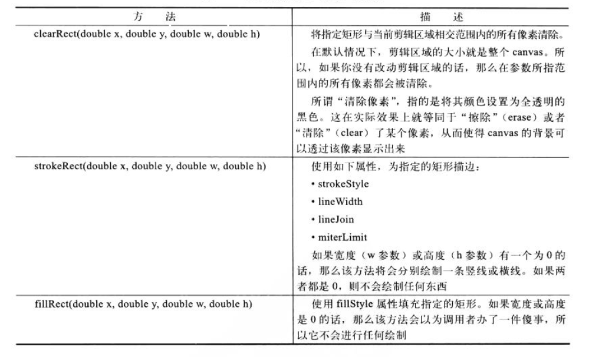
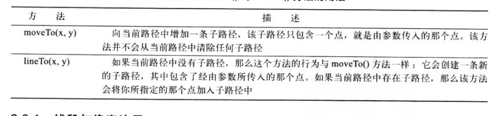
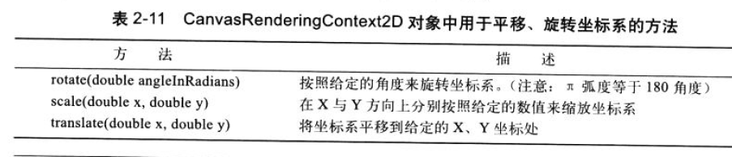
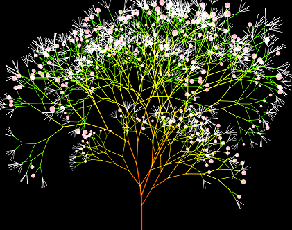

Canvas入门与拓展
author: 崔鹏
date: 2015-03-09
题要
一、 HTML5背景介绍
二、 CANVAS简介
三、 准备知识：数学知识&物理原理
四、 CANVAS API
五、 扩展1：Demo示例
六、 扩展2：个人小发明
HTML5背景介绍
1-1 什么是HTML5？
个人认为，HTML5可以是一个比较广义的概念，代表了当前新形势下的web领域一大波新技术的集合。 我感觉至少包含以下几类技术：
1.狭义的HTML5。这块包含的技术点比较多，是H5开发大头，也是基础要求。
2.CSS3。这块包含的技术点比较多，是H5开发大头，也是基础要求。
3.网络通信，包含http2.0，xhr2.0，webrtc，websocket等最新的通信技术标准。
4.多媒体。不用安装插件即可支持播放音视频，同时可与CSS无障碍配合。
5.图形编程（canvas,svg,webGL）,支持2d/3d绘图能力。js直接调用opengl es 2.0 api。
6.新的渲染引擎（webkit）与js虚拟机运行原理，性能强劲。
7.最新ECMAScript 6语言规范，从语言层面进行了重构与增强。
参见:http://javascript.ruanyifeng.com/advanced/ecmascript6.html
8.本地缓存localstorage，甚至本地数据库技术IndexedDB,webSQL等。
9.WEB组件化，widget开发将更加规范，提高可复用性，避免重复造轮子。10.Device API，实现各种人机交互硬件需求，如语音，摄像头，gps等。
人脸识别demo:http://neave.github.io/face-detection/
手势识别demo:http://www.webhek.com/misc/gestures-reveal-js
11.File API，提供对本地文件的操作支持。
12.前端架构、前端设计模式、WebAPP规范、前端性能规范、前端模块化规范、前端适配。
13.前端工程化实践。如再用的有百度fis,grunt等
14.node编程。使JS具备了本地编程和服务端编程的能力。
15.多线程webworker技术。。。等等各种新技术和新思想，等你去发现。
（注：HTML5作为HTML4的增强，自然也包含了原HTML4的相关技术，但不在此介绍范围内）。
1-2 发展情况
简单搜索了几则新闻摘录如下：
1.Google今起将自动转换Flash广告为HTML5版本
2.YouTube视频将默认使用HTML5迁移Flash技术
3.Apple开放js加速引擎Nitro，重视iOS设备上HTML5的表现。
4.得益于WEB优良的跨平台性，很多电视，车载系统，家用电器等嵌入式领域也在用HTML5技术开发实现
如海信在SINOCES2013展出HTML5概念电视,KT（韩国电信）实现了基于HTML5的智能IPTV等。
系统只需要支持WEB技术，就能够轻易运行众多WEB应用，企业成本降低了很多，而且方案足够简单。
5.大量的HTML5游戏涌现，如神经猫一款小游戏短时间内就聚集了大量人气。
6.前端数据可视化方向。越来越多的BI应用采用HTML5开发， 百度地图API发布HTML5矢量地图渲染引擎；。。。等等
因为它在跨平台支持技术上的完美表现以及软件升级维护方便等固有特点，加之各种规范的逐步落地，互联网各大公司都强调了HTML5技术在下一代产品中的战略地位，积极拥抱HTML5， 对HTML5的发展也起到了很好的促进作用。
CANVAS简介
2-1 什么是Canvas?
Canvas是HTML5技术标准中最令人振奋的功能之一，它提供了一套强大的2D图形API，允许脚本语言动态渲染图像。 主要由<canvas>元素和Canvas API技术组成： <canvas>是HTML5中新添加的元素类型，决定了在页面布局中的位置，js可以访问到该区域，属于HTML5(狭义的)规范定义的内容。 具体的画图API是单独的规范，目前有两种API类型，一种是常见的2D绘图API另一种是支持3D的WebGl技术。 以下如不特别说明，Canvas主要指的是2d绘图API，<canvas>代表具体被绘图的元素。
2-2 代码印象
个人的理解是，<canvas>是画板，一张白纸，canvas(api)可以理解是绘笔，可随意涂鸦。
<canvas>在html中定义，canvas api在js中实现，如下图所示：

2-3 Canvas能干什么？
Canvas非常灵活，能够很好地融合JavaScript代码并在浏览器内绘制华丽的图形。 你可以使用javascript用它来绘制图形、图标、以及其它任何视觉性图像，它也可用于创建图片特效和动画。
到底，我们能用Canvas做些什么呢？
1. 游戏：毫无疑问，游戏在HTML5领域具有举足轻重的地位。HTML5在基于Web的图像显示方面比Flash更加立体、更加精巧，运用Canvas制作的图像能够令HTML5游戏在流畅度和跨平台方面发挥更大的潜力。
2. 图表制作：图表制作时常被人们忽略，但无论企业内部还是企业间交流合作都离不开图表。现在一些开发者使用HTML/CSS完成图标制作，大家完全可以用Canvas来实现。当然，使用SVG来完成图表制作也是非常好的方法。
3. 动态广告：Flash曾经辉煌的时代，智能手机还未曾出现。现在以及未来的智能机时代，HTML5技术能够在banner广告上发挥巨大作用，用Canvas实现动态的广告效果再合适不过。
4. 模拟器：无论从视觉效果还是核心功能方面来说，模拟器产品可以完全由JavaScript来实现。
5. 远程计算机控制：Canvas可以让开发者更好地实现基于Web的数据传输，构建一个完美的可视化控制界面。
6. 字体设计：对于字体的自定义渲染将完全可以基于Web，使用HTML5技术进行实现。
7. 图形编辑器：以后的图形编辑器将能够100%基于Web实现。
8. 其他可嵌入网站的内容：类似图表、音频、视频，还有许多元素能够更好地与Web融合，并且不需要任何插件。
9. 大家可继续挖掘Canvas的潜力，运用HTML5技术创造更多价值，以上并不代表所有的一切。
准备知识：数学知识
求解代数方程
三角函数
向量运算
矩阵计算
贝塞尔曲线
笛卡尔坐标系
几何变换
具体原理可自行百度一下，可以在用到的时候随时查手册 ，以上知识大部分的需求都可以实现，然后可能根据需求有一些自己的小算法实现。
其它更高级别的可以研究一下计算机图形学，道理都是一样的。
CANVAS API
Canvas API主要包含图形绘制，着色，渐变，文本渲染，图片读取操作等功能， 它提供的API足够简单，足够底层，同时足够灵活，如果你掌握了完整的命令，你可以用canvas创建丰富的web应用程序。






更加详细的可见,canvas api 规范 http://www.w3.org/TR/2dcontext/
扩展1：Demo示例
代码文件/canvas/tree.js
预览地址/canvas/index.html

此处结合代码说明。
扩展2：个人小发明
访问地址：/screensharer/ 功能简要说明。